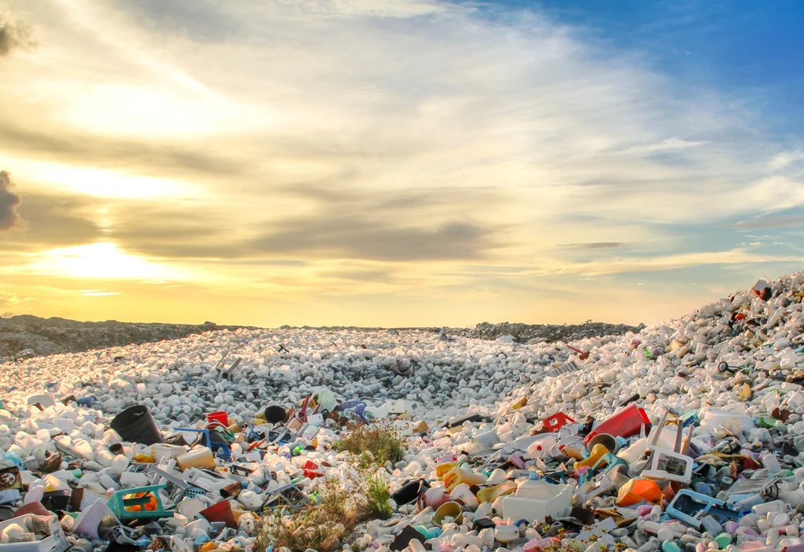
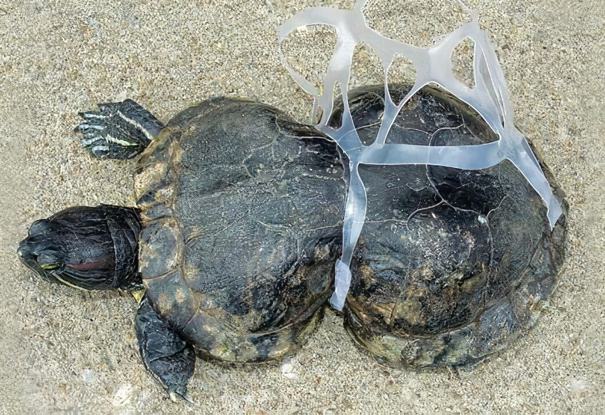
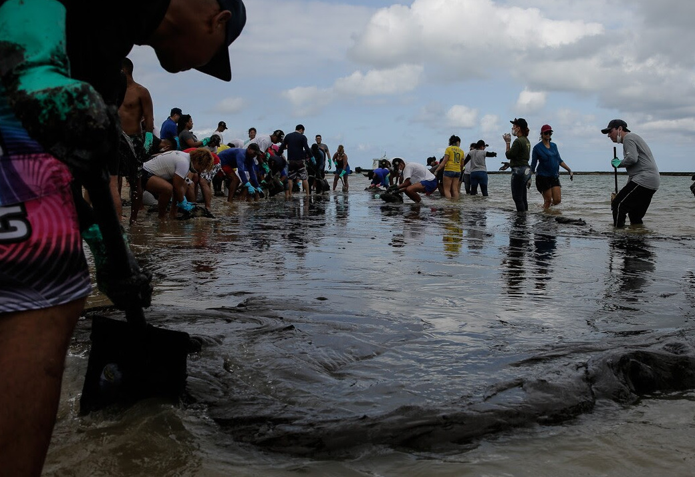

O descarte irresponsável de resíduos causa danos ambientais significativos, poluindo solos, águas e afetando a vida selvagem. No último ano, mais de 1,3 milhão de toneladas de resíduos foram descartadas de maneira inadequada no Brasil, destacando a urgência de soluções.
Cerca de 8 milhões de toneladas de plástico acabam nos oceanos a cada ano. Esse lixo ameaça mais de 800 espécies marinhas e representa 80% de toda a poluição oceânica. Até 2050, pode haver mais plástico que peixes nos oceanos se não adotarmos medidas urgentes para reduzir o lixo marinho.
O descarte irregular de resíduos, tanto marinho quanto terrestre, contribui para as mudanças climáticas. A decomposição de lixo em aterros libera metano, um potente gás de efeito estufa. Nos oceanos, plásticos prejudicam a absorção de CO₂ pelos fitoplânctons, agravando o aquecimento global e alterando padrões climáticos.
